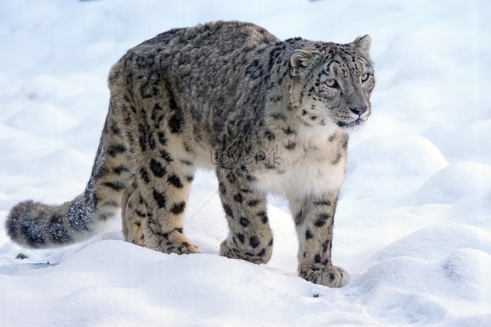
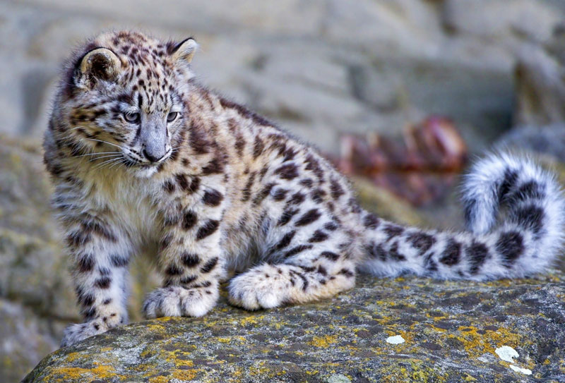

To lớn, nhẹ nhàng và nhanh nhẹn, báo tuyết thuộc họ mèo lớn và được tìm thấy ở các dãy núi Trung và Nam Á. Bạn có thể tìm thấy loài vua núi này ở 12 nước của châu Á, bao gồm Trung Quốc, Ấn Độ và Nga, nhưng môi trường sống lớn không có nghĩa là bạn có thể dễ dàng bắt gặp chúng trong tự nhiên. Báo tuyết được coi là loài “sắp nguy cấp” trong Sách Đỏ IUCN với quần thể còn lại ước tính là 4000-7000 cá thể (IUCN).
Các dãy núi Trung và Nam Á
Là loài ăn thịt mạnh nhất trong môi trường sống của mình, báo tuyết giúp kiểm soát quần thể con mồi của chúng, đảm bảo số lượng con mồi ổn định và ngăn chặn số lượng con mồi vượt quá mức đáp ứng của lượng cây cỏ địa phương. Tập tính ăn thịt của báo tuyết cũng giúp loại bỏ những cá thể ốm yếu thuộc các bậc dinh dưỡng thấp hơn trong chuỗi thức ăn.
Báo tuyết bị săn bắt để lấy da làm đồ trang trí nhà cửa, thú nhồi và sản phẩm thời trang. Con mồi của chúng—thường là dê và cừu hoang dã—cũng là nạn nhân của nạn săn bắt phi pháp và thoái hóa đất, và điều này đe dọa đến khả năng tìm thức ăn của báo tuyết.